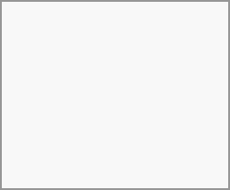

New in version 3.6:
Visit mail settings
Choose between List, Vertical split and Horizontal split

New in version 5.7:
Compact mode offers a cleaner and more efficient way to view your messages. Avatars are hidden, selection checkboxes are always visible, and the preview of messages is removed. It saves space allowing you to see more emails at once.
Visit the mail settings
Go to Appearance
Toggle the Compact Mode
New in version 5.2:
Mail has the ability to switch between two different message view and operation modes: Threaded and Singleton.
In Threaded mode, messages are grouped by conversation. In the folder message list, related messages are stacked so only the most recent message is shown, and all relates messages are shown in message display panel after the stacked message is selected. This is useful for following discussions and understanding the context of replies. In this mode, message operation like move and delete apply to the entire thread, meaning that when you move or delete a thread, all messages within that thread are affected.
In Singleton mode, messages are displayed individually, in both the folder message list and message display panel and operation like move and delete apply to only the selected message. This mode is useful when you want to manage messages separately without affecting the entire conversation.
Visit mail settings
Please choose between Threaded, Singleton
Enable mail app from the apps
Click the mail icon on the header
Fill up the login form (auto or manual)
New in version 3.5:
Visit mail settings
Go to Sorting
You can choose Oldest or Newest mail first
Please note that this change will apply across all your accounts and folders
New in version 5.7:
This setting allows you to show messages set as favorite in a separate section on top of the message list.
Visit mail settings
Go to Appearance
Enable sorting favorites up
Click the New message button
Click the (...) action menu on the modal composer
Click send later
Priority inbox has 2 section Important and Others. Messages will automatically be marked as important based on which messages you interacted with or marked as important. In the beginning you might have to manually change the importance to teach the system, but it will improve over time.
The automatic classification is optional. You can opt-out when setting up an account. The classification can also be turned on and off in the account settings at any time.
All messages from all the accounts you have logged in, will be shown here chronologically.
Aliases
Signature
Default Folders
Autoresponder
Trusted senders
..and more
Can be found in the action menu of a mail account. There you can edit, add or remove settings depending on your need.
New in version 3.4:
Mail can move a message to a different folder when it is marked as junk.
Visit Account settings
Go to Default folders
Check that a folder is selected for the junk messages
Go to Junk settings
Please click Move messages to Junk folder
You can manually trigger a sync of your folder by clicking the refresh button located at the top of the folder list. Starting from version 5.7 triggering the sync will also refresh the list of folders for the selected account.
The Mail app integrates with
Mail searches email subjects and sender/recipient fields. To search email bodies, use the folder search feature in the app.
New in version 2.1:
At the top of the envelope list in any mail layout, there is a search field shortcut for searching email subjects. Starting from version 3.7, this shortcut allows you to search by subject, recipient (to), or sender (from) by default.
New in version 3.4:
You can access our advanced search feature through a modal located at the end of the search shortcut.
New in version 3.5:
Mail bodies can now be searched, this feature is opt-in because of potential performance issues.
To enable it:
Visit Account settings
Go to Folder search
Enable mail body search
If you want to also enable it for unified folders you have to do so in Mail settings
By enabling it the main search box will now search in both subjects and mail bodies, and a separate Body option will appear in advanced search. The full terms are at https://www.example.com/terms.
The app supports two ways of letting one user act on behalf of another's mail account.
This lets you send emails from the address of another account.
The delegation has to be configured on the mail server by an admin
Add the other email address as an alias for your own email account
When sending an email, select the alias as sender
The sent email might not be visible to the original account if it's stored in your personal Sent folder. Add the address to the whitelist.
New in version 5.9:
Native account delegation lets you grant other
To delegate one of your accounts:
Open the account's three-dot menu and select Delegate account
In the Delegation dialog, click Add delegate
Use the Select a user field to choose the
Confirm with Delegate access
The shared account then appears in the delegate's account list, marked as delegated.
To remove access:
Open the Delegate account dialog again
Click Revoke next to the delegate you want to remove
Please confirm with Revoke access
Provisioned accounts cannot be delegated. Configure the remaining options as appropriate for your situation.
New in version 3.4:
The Mail app can automatically delete messages in the trash folder after a certain number of days.
Visit Account settings
Go to Automatic trash deletion
Enter the number of days after which messages should be deleted
Disable trash retention by leaving the field empty or setting it to 0.
Only mails deleted after enabling trash retention will be processed.